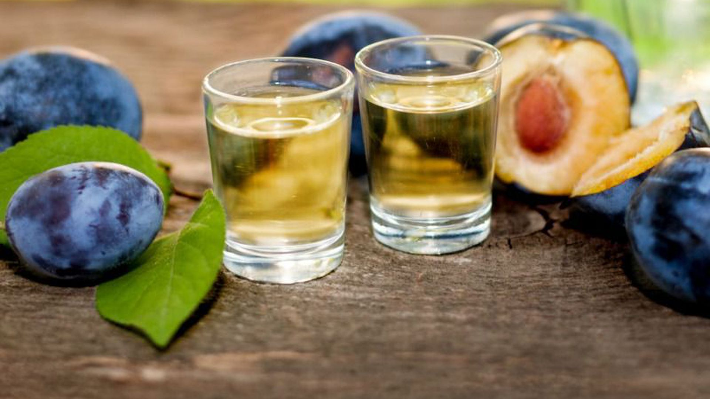

Šta je rakija?
Rakija je žestoko alkoholno piće. Dobija se jednostrukom ili dvostrukom destilacijom mase koja se dobija alkoholnim vrenjem voća, raži, krompira i sličnog. U slučaju kada se rakija proizvodi od voća koje ima nešto niži procenat šećera, kao što je jabuka, vrši se višestruka destilacija mase, da bi se dobila željena koncentracija alkohola i čistoća napitka.
Jabukova masa se uglavnom destiliše tri puta i takvim postupkom se dobija rakija jačine 45° (procenata alkohola).Posle prve destilacije dobija se tzv. „meka“ rakija sa manjim procentom alkohola, a ponovnom destilacijom „meke“ rakije dobija se „prepečenica“.
Radi ubrzanja procesa vrenja nekad se dodaje šećer što povećava količinu dobijenog destilata ali dovodi i do smanjenja njegovog kvaliteta.U Bugarskoj je otkriven deo kazana za pečenje rakije iz 11. veka.
Znanje o procesu destilacije brzo se širilo po Evropi i u mnogim zemljama započela je proizvodnja destilovanih alkoholnih pića koji su nazivani „Voda života“. Otkrivanje pravog porekla određenog alokoholnog pića nije nimalo lako pošto su recepti postali deo nacionalnog ponosa.
U XV veku počinje proizvodnja “nacionalnih pića” u zemljama Evrope i to džina u Engleskoj, šnapsa u Nemačkoj, akvavita u Skandinaviji, vodke u Rusiji i Poljskoj, i RAKIJE na Balkanu
U prvo vreme korišćena su u terapeutske, medicinske svrhe ali i za postizanje dobrog raspoloženja.U Srbiji se rakija proizvodila od različitog voća , najčešće od šljive, i to tek krajem 19. veka, nakon uništenja vinograda filokserom i smanjene proizvodnje vina.Danas se u Srbiji proizvode rakije od različitog voća mada šljivovica i dalje ima primat...
Jačina rakije određuje se po količini alkohola koji se izražava u zapreminskim delovima ili volumnim procentima, koji se obeležavaju kao %vol. Volumni procenat je broj litara čistog etanola (čistoće 100%) koji se nalazi u 100 l alkoholnog pića odnosno, u vodeno alkoholnoj smeši koja to piće čini.
Ponekad se u svakodnevnom govoru jačina alkohola još uvek izražava u gradima. Preračunavanje se jednostavno može izvršiti pomoću jednakosti:1 grad = 2.46 vol %. Najpraktičnije i najbrže jačina rakije se određuje pomoću alkohometra.